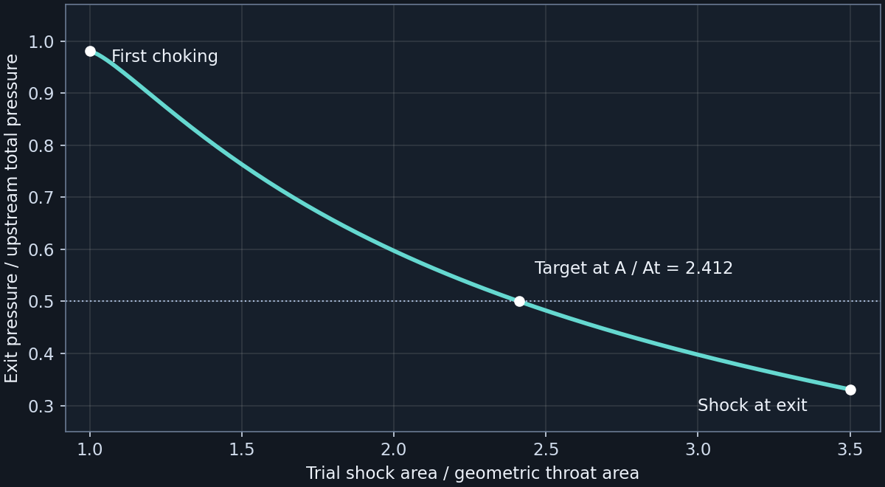

Chapter 23 · Lectures 70–72
Air and steam nozzle calculations
Locate a normal shock from back pressure and adapt the nozzle balances to steam properties.
An air nozzle with exit-to-throat area ratio 3.5 runs from a reservoir at 1 MPa and 500 K. The laboratory can set the back pressure to 20 or 500 kPa. Both settings choke the throat, so both pass the same mass flow. The interior shock occurs at 500 kPa. At 20 kPa the stream expands outside the nozzle. A second nozzle, fed by steam, illustrates which parts of the analysis survive a change of working fluid.
Bracket the air-nozzle regime Part 10 · 0:00
Write \(A_t\) for geometric throat area, \(A_e\) for exit area, \(p_{t1}\) for upstream stagnation pressure, \(T_t\) for the common stagnation temperature, and \(p_b\) for back pressure. In the one-dimensional, inviscid, adiabatic model with negligible shaft work, use \(\gamma=1.4\) for air. The area–Mach relation gives both a subsonic and a supersonic root at the exit for \(A_e/A_t=3.5\). The downstream state can also be subsonic following an interior normal shock.
There are three useful pressure landmarks. The subsonic isentropic root at the exit of a nozzle with a sonic throat gives first choking at \(p_b=980.45\) kPa. The supersonic root is \(M_e=2.8000\), giving the design exit pressure \(p_e=36.85\) kPa. If the normal shock stands just at the exit, multiply that static pressure by the normal-shock pressure ratio to obtain \(p_b=330.91\) kPa. Use the same upstream stagnation state for all three checks.
A back pressure of 20 kPa lies below design pressure. The jet is underexpanded and the divergent section has the isentropic supersonic exit at 36.85 kPa. By contrast 500 kPa is between the shock-at-exit and first-choking limits, so the ideal model selects an internal shock and a subsonic exit at the imposed 500 kPa. Part 10 · 4:40
Locate the internal shock Part 10 · 9:40
Pick a trial shock section with area \(A_s\) between throat and exit. On the upstream isentrope, \(A^*=A_t\), where the starred area denotes the area that carries the current mass flow at Mach 1 and the local stagnation state. Invert the supersonic area–Mach branch at \(A_s/A_t\) to obtain the Mach number \(M_a\) immediately before the jump. The normal-shock relations give the total pressure ratio \(\chi=p_{tb}/p_{ta}\), where \(a\) and \(b\) denote the states before and after the shock.
For the same gas and \(T_t\), the choked mass flux is proportional to total pressure. Since mass flow is conserved, the downstream hypothetical sonic area is \(A^*_b=A_t/\chi\). Use the subsonic area–Mach root at \(A_e/A^*_b=(A_e/A_t)\chi\) to compute the candidate exit Mach number. Then compare the predicted exit pressure with \(p_b\):
\[ \frac{p_e}{p_{t1}}=\chi \left(1+\frac{\gamma-1}{2}M_e^2\right)^{-\gamma/(\gamma-1)}. \]
Numerical bisection on \(A_s/A_t\) at \(p_b/p_{t1}=0.5\) yields \(A_s/A_t=2.4118\), \(M_a=2.4039\), and \(M_e=0.3272\). For this smooth diverging section, increasing the trial shock area makes the upstream Mach number larger and the total-pressure ratio smaller. The exit area ratio on the downstream isentrope then decreases, making the subsonic exit Mach larger. Both factors reduce the predicted exit pressure, which makes the residual suitable for bisection. Converting the area ratio into an axial location also requires the nozzle's area profile. Part 10 · 13:00 · NACA Report 1135
The lecture also obtains the exit state directly from mass conservation. Because the throat is choked, compute its mass flux \(G^*\) from the upstream total state and set \(G_e=G^* A_t/A_e\). At the subsonic outlet \(p_e=p_b\), so \(G_e=p_b M_e\sqrt{\gamma/(R T_e)}\) with \(T_e=T_t/[1+(\gamma-1)M_e^2/2]\). Squaring gives a quadratic in \(M_e^2\) with one positive root. Then \(p_{te}=p_b(T_t/T_e)^{\gamma/(\gamma-1)}\). For 500 kPa this gives \(T_e\simeq489.5\) K and \(p_{te}\simeq538.5\) kPa. The 20 kPa case follows the shock-free design branch and gives \(T_e\simeq194.7\) K with \(p_{te}=1000\) kPa. Part 10 · Exit-state calculation

Critical pressure for a steam isentrope Part 11 · 7:40
For a steam reservoir with stagnation enthalpy \(h_t\) and specific entropy \(s_t\), a smooth equilibrium isentrope through static pressure \(p\) gives \(h(p,s_t)\) and \(v(p,s_t)\), where \(v\) is the volume per kilogram. Compute the axial speed and mass flux \(G\) with
\[ C(p)=\sqrt{2[h_t-h(p,s_t)]},\qquad G(p)=\frac{C(p)}{v(p,s_t)}. \]
Use J/kg for the enthalpy difference to recover m/s. In a convergent nozzle in this model, the maximum of \(G(p)\) along the reservoir isentrope sets the choking pressure. This procedure can use tables or an equation of state. In the two-phase equilibrium region, recover the vapor mass fraction from \(s_t=s_f+x(s_g-s_f)\) at the trial pressure, and use the same fraction in the \(h\) and \(v\) balances. IAPWS Industrial Formulation 1997
The extremum criterion is sonic on any smooth isentrope with positive acoustic speed. Since \(G=\rho C\) and \(C\,dC=-v\,dp\), differentiation yields \((dG/dp)_{s_t}=C/a^2-1/C\) with \(a^2=(\partial p/\partial\rho)_s\). An interior stationary point therefore has \(C=a\). A numerical search for the maximum along the real-fluid isentrope implements choking without using the perfect-gas pressure ratio.
The lecture also approximates a segment by \(pv^n=p_t v_t^n\), where \(p_t\) and \(v_t\) are reservoir pressure and specific volume and \(n>1\) is a fitted expansion exponent. With \(r=p/p_t\), we have \(v=v_t r^{-1/n}\). Integrating \(dh=v\,dp\) along this model isentrope gives
\[ h_t-h=\frac{n}{n-1}p_t v_t\left(1-r^{(n-1)/n}\right). \]
Substitution into the flow expression shows that \(G^2\) is proportional to \(r^{2/n}(1-r^{(n-1)/n})\). Setting its derivative with respect to \(r\) to zero gives \(r^{(n-1)/n}=2/(n+1)\). Thus
\[ r^*=\left(\frac{2}{n+1}\right)^{n/(n-1)}. \]
At the maximum, substitution gives \(C^2=npv\). On the fitted isentrope, \(a^2=(\partial p/\partial\rho)_s=npv\), since \(\rho=1/v\). The maximum therefore corresponds to the model sonic state. The fitted exponent varies with the state range and is a teaching approximation. Real rapid expansions can show delayed condensation and slip between droplets and vapor, which violate the equilibrium, uniform-velocity model. Part 11 · 11:20
Compare an unchoked and a choked steam outlet Part 12 · 0:00
The lecture's first example gives wet steam in a chest at 600 kPa with vapor mass fraction 0.9 and \(v_t=0.2845\,\mathrm{m^3/kg}\). The convergent outlet area is \(0.002\,\mathrm{m^2}\). Use \(n=1.035+0.1(0.9)=1.125\) for this example. The computed sonic pressure is 347.69 kPa. For a 400 kPa back pressure, the steam leaves at 400 kPa, 367.90 m/s and 1.8037 kg/s using the power-law model. For a 300 kPa back pressure the exit is sonic at 347.69 kPa, 425.14 m/s and 1.8401 kg/s. The free jet adjusts to 300 kPa downstream.
As an equilibrium-property check on the power law, IAPWS-IF97 gives \(h_t=2547.58\) kJ/kg and \(s_t=6.27636\) kJ/(kg K) at 600 kPa and \(x=0.9\). Along that isentrope at 400 kPa it gives \(h=2480.06\) kJ/kg and \(v=0.40660\,\mathrm{m^3/kg}\), leading to \(C=367.48\) m/s and \(\dot m=1.8075\) kg/s. Maximizing \(C/v\) yields a critical pressure of 347.10 kPa and a choked flow of 1.8449 kg/s for the same area. Part 12 · Steam-table method · IAPWS Industrial Formulation 1997
For the lecture's 500-to-300 kPa convergent nozzle, dry saturated steam already moves at the inlet. Continuity gives \(C_1=(A_e/A_1)(v_1/v_e)C_e\). The specified diameters of 0.050 and 0.025 m give \(A_e/A_1=0.25\). With \(n=1.135\) and \(v_1=0.37480\,\mathrm{m^3/kg}\), the power law gives \(v_e=v_1(500/300)^{1/n}=0.58785\,\mathrm{m^3/kg}\) and \(h_1-h_e=92.88\) kJ/kg. Thus \(C_1=0.1594C_e\) and \(C_e=\sqrt{2(92880)/(1-0.1594^2)}=436.6\) m/s, giving \(C_1=69.6\) m/s. This exit speed is below the modeled acoustic speed \(\sqrt{np_e v_e}=447.4\) m/s. In kJ/kg, the stagnation enthalpy is \(h_{t1}=h_1+C_1^2/2000\), with \(C_1\) in m/s. With \(h_{t1}\) and \(s_{t1}=s_1\), IAPWS-IF97 gives a stagnation pressure near 506.5 kPa. Part 12 · 9:20
In the last calculation, a 700 kPa, 250 °C reservoir supplies \(\dot m=0.076\) kg/s and the specified in-nozzle exit pressure is 100 kPa. For the equilibrium isentrope, \(h_t=2954.12\) kJ/kg and \(s_t=7.10712\) kJ/(kg K). The maximum-flux throat pressure is 380.90 kPa, close to the 382 kPa estimate from \(n=1.3\). The saturation crossing satisfies \(s_g(p)=s_t\) at about 212 kPa, so the throat is superheated and the exit is a mixture. At the throat, \(v=0.53613\,\mathrm{m^3/kg}\) and \(C=516.87\) m/s. At 100 kPa, \(x=0.95844\), \(v=1.62367\,\mathrm{m^3/kg}\) and \(C=863.70\) m/s. Using \(A=\dot m v/C\) and \(D=\sqrt{4A/\pi}\) gives 10.02 mm at the throat and 13.49 mm at the exit. A convergent–divergent nozzle accommodates the supersonic expansion to the specified exit state. An ambient pressure of 100 kPa alone would also allow a convergent nozzle with further expansion in the free jet. Part 12 · 13:20 · IAPWS Industrial Formulation 1997
Numerical laboratory
Run the Python laboratory in a directory containing its two local dependencies, the normal shock routine and area–Mach solver. It prints the air-nozzle regime thresholds and internal shock solution, then checks the predicted exit pressure against the target and the exit Mach number against the direct mass-flux solution. For steam it uses the power-law model and verifies that lowering the back pressure further preserves the choked solution. Inputs are in SI units. The lab requires only the Python standard library.
Problems with worked solutions
Distinguish a jet pressure from a boundary demand
For the air nozzle, choose the ideal regime at \(p_b=70\) kPa.
Show solution
Solution. The pressure is below the 330.91 kPa shock-at-exit threshold and above the 36.85 kPa design point. The model predicts an internal isentropic supersonic exit at 36.85 kPa. The higher ambient pressure makes this jet overexpanded, so it compresses after leaving the nozzle. A large enough mismatch can introduce separation within a real nozzle.
Compare the two sonic reference areas
A normal shock leaves 70% of its incoming stagnation pressure. Find \(A^*_b/A_t\) for the choked nozzle.
Show solution
Solution. With constant mass flow and total temperature, \(p_{ta}A_t=p_{tb}A^*_b\). Thus \(A^*_b/A_t=1/0.7\approx1.429\). The downstream reference is a mathematical state associated with the new isentrope. The actual geometric throat is unchanged.
Size a convergent outlet for wet steam
Keep the 600 kPa steam reservoir and \(n=1.125\). How much area would pass 0.920 kg/s at a back pressure below 347.69 kPa?
Show solution
Solution. The computed sonic flux is \(1.8401/0.002=920.05\) kg/(m² s). The required area is \(0.920/920.05\approx0.00100\,\mathrm{m^2}\) in the power-law model. This scales linearly with requested flow at fixed reservoir state.
Check the pressure at which the property model changes
Assume steam crosses from superheated vapor into the two-phase region at 212 kPa. The approximate sonic pressure is 382 kPa and the specified exit pressure is 100 kPa. Which states require mixture properties?
Show solution
Solution. Pressure falls monotonically from the reservoir on the shock-free expansion considered. At 382 kPa the throat is encountered before the saturation crossing and remains superheated. The 100 kPa exit lies after the crossing and requires mixture properties on the selected isentrope. A single constant exponent across both intervals would require a separate accuracy check.